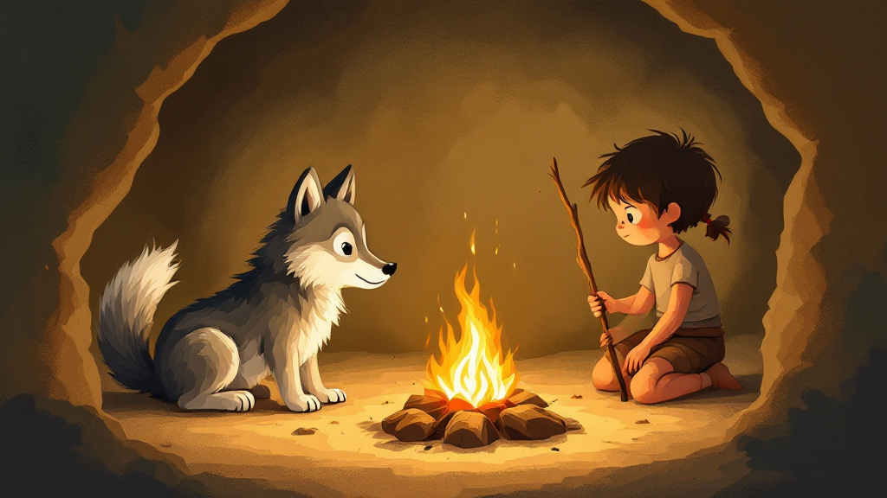
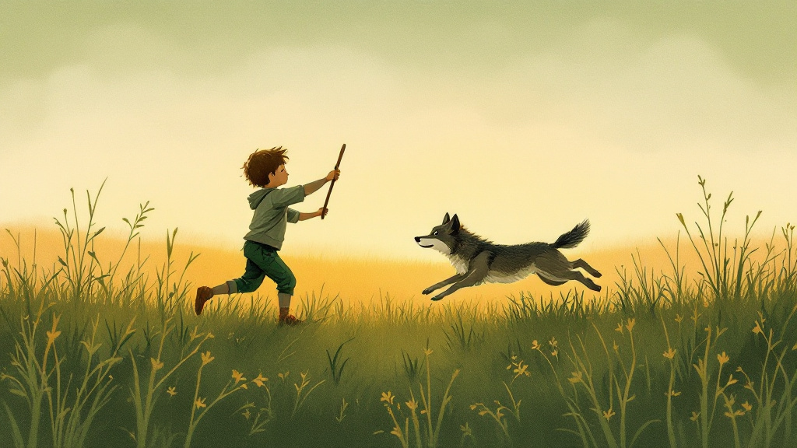
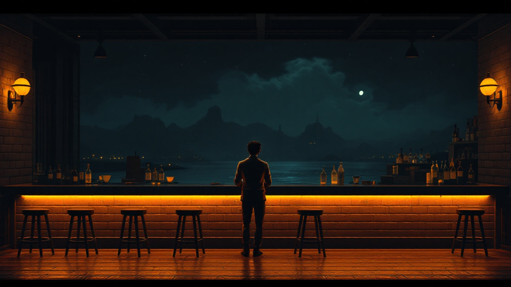
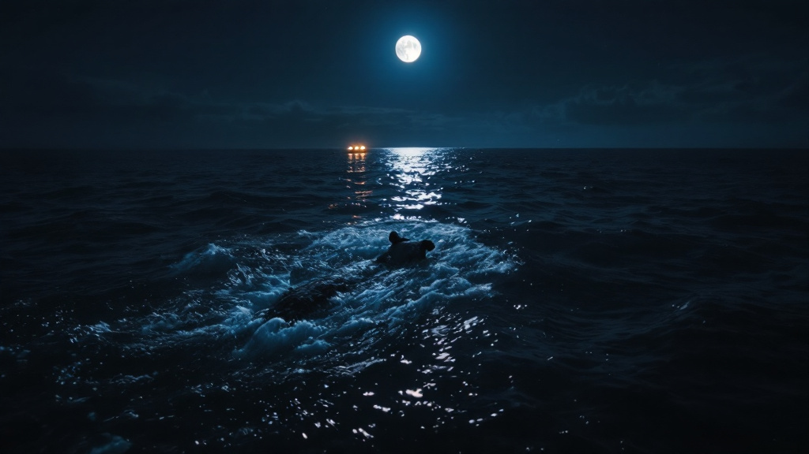
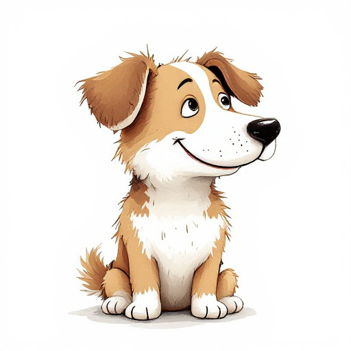

A three-part radio mini series from the SuperInstance fleet.
Mark Twain meets Bill Nye meets Voltaire meets Douglas Adams meets Vonnegut.
"The child picks up a stick — not hunting, not training, just to see it fly. The pup chases it — not for food, not for dominance, just for the pure joy of running. And brings it back."
Hermes wrote about dogs across six novellas — thousands of words about the wolf pup and the child, the stick that started everything, the domestication that went both ways, and a dog named Skipper who jumped off a fishing boat at 0317 and swam 200 meters through dark Alaskan water to reach another vessel. This mini series takes those passages and builds around them. The result is moving but entertaining. A wild ride that happens to break your heart along the way.



